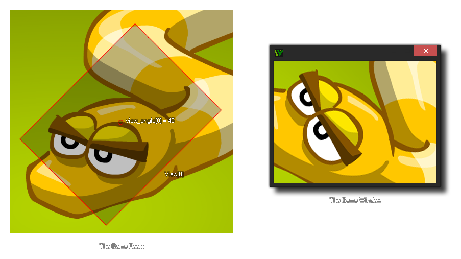

view_angle[0...7]
Returns: Real
With this variable, you can get (or set) the angle at which the
view is to be drawn. The default angle is 0º but it can be set to
any angle between -359º and 359º. This will not affect how
the game is played as it is only for setting the angle at which the
view is drawn. Often it is used to create a rotating
minimap, or to "shake" the view for example.
NOTE: This variable will not work on the HTML5 target
module.

if shake
{
view_angle[0] = -10 + random(20);
}
else
{
view_angle[0] = 0;
}
the above code will check the variable "shake" and if it returns true, it will then change the view[0] angle to a random value between -10 and 10 every step until the variable returns false, at which time it will return the view[0] angle to 0º.